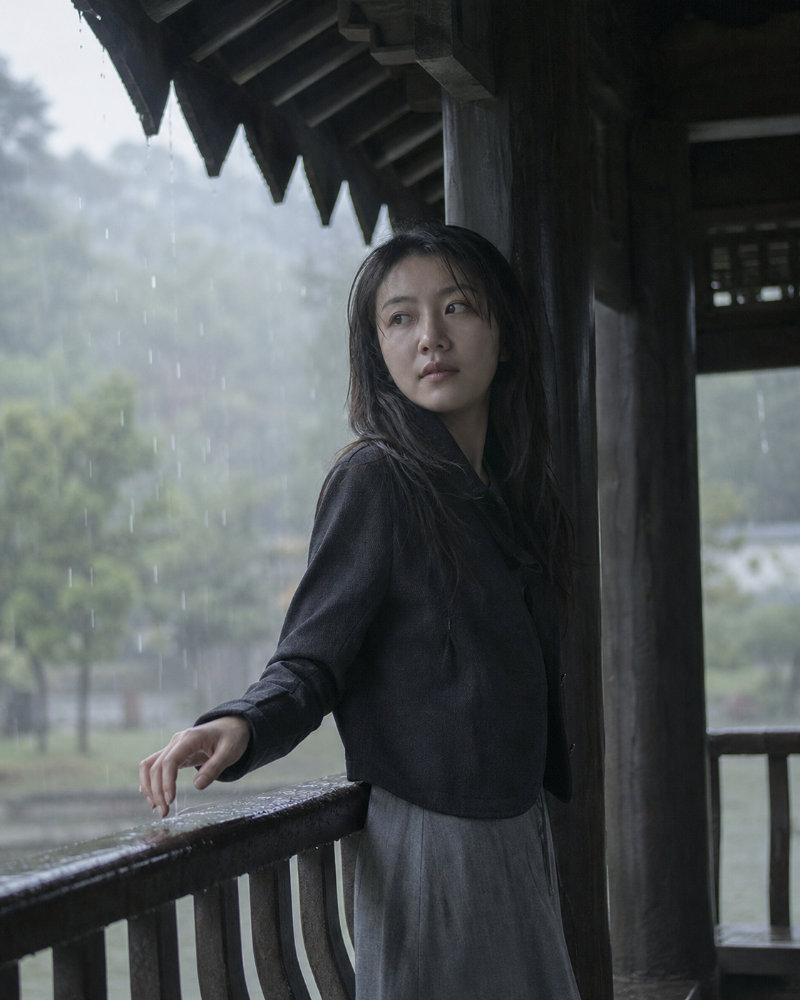
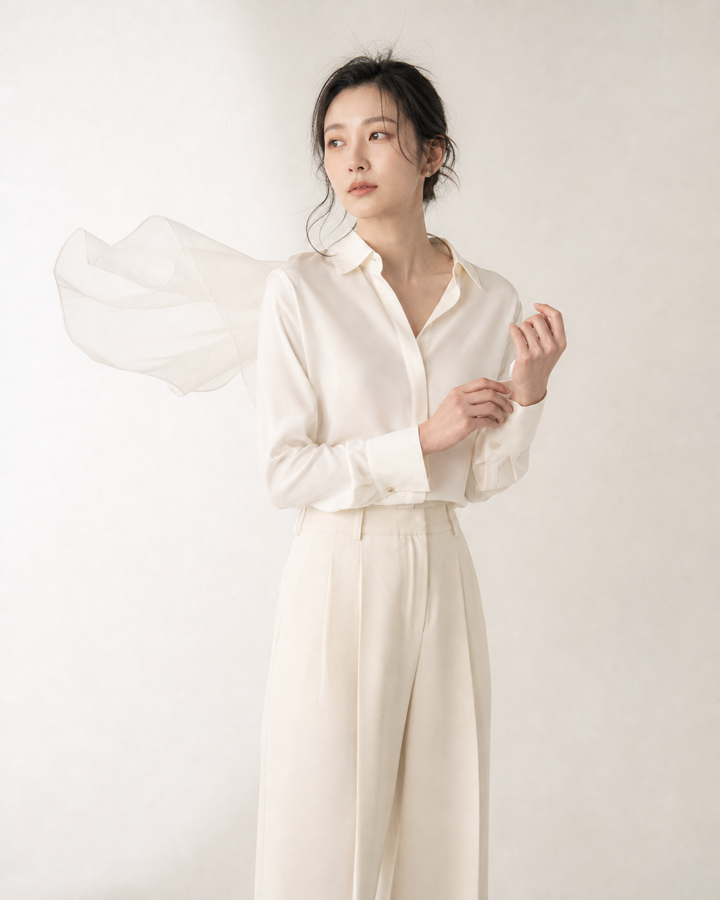
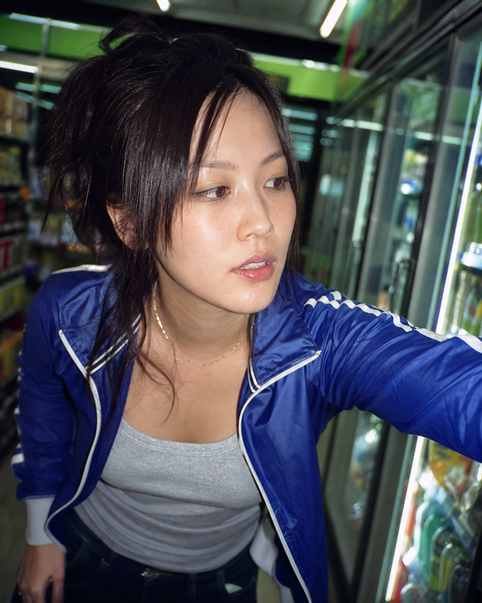
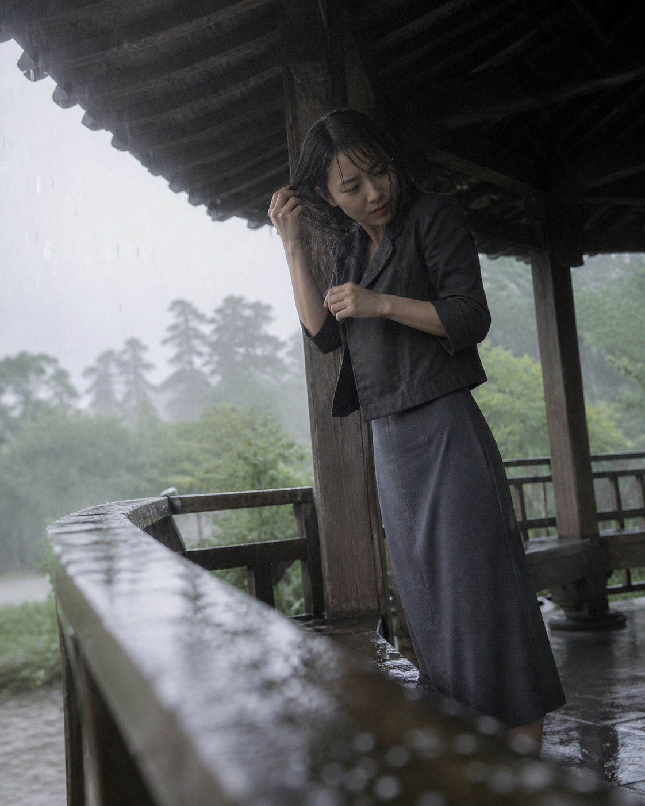
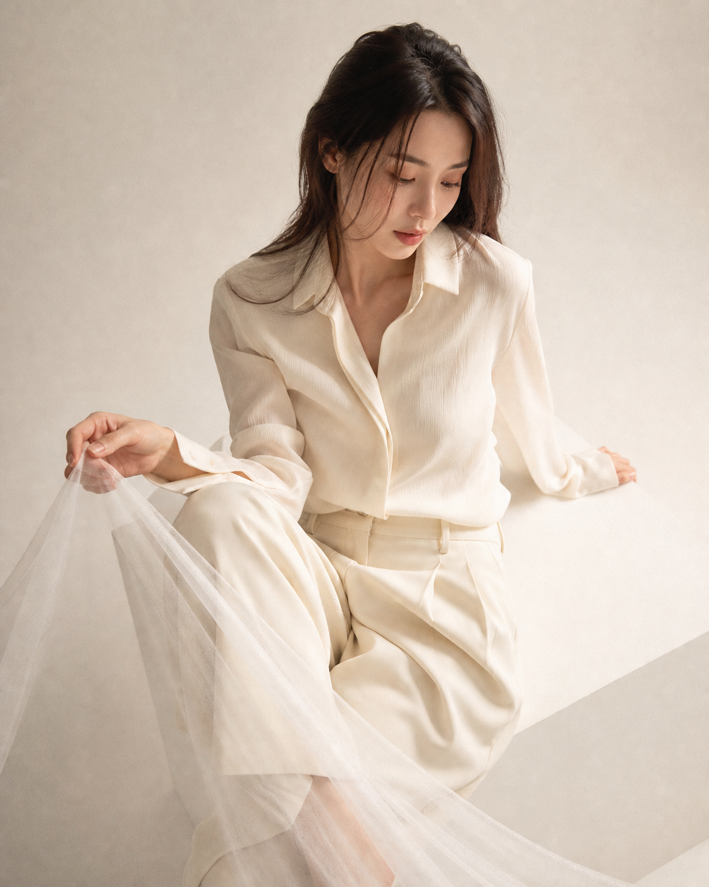
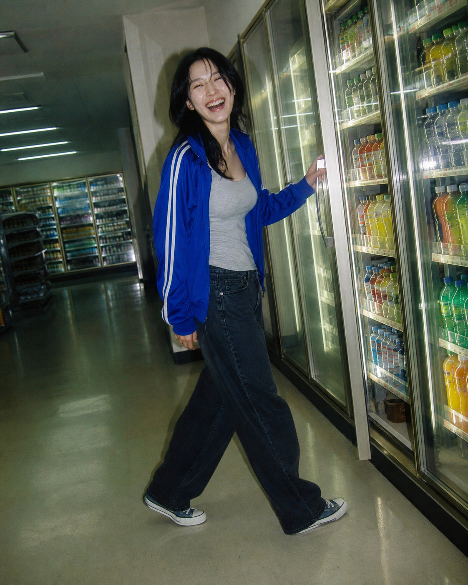

生产控制层
从“写几个漂亮词”升级为任务路由、输入合同、摄影知识、失败处理、质量门禁与追溯记录。
01 / JUDGMENT
研究判断
上游把摄影师、视觉导演和后期人员可语言化的隐性控制变成一套 Agent 可执行的“软程序”：判断主题与任务、分配参考职责、重建机位和光照、编译 Prompt、调用现有图片工具，再按摄影方案检查结果。
从“写几个漂亮词”升级为任务路由、输入合同、摄影知识、失败处理、质量门禁与追溯记录。
没有训练权重、LoRA、Face ID、ControlNet、换脸、视觉评分模型或独立图片生成服务。
02 / REAL SAMPLE LIBRARY
直接看提示词能控制什么

01A / RAIN PAVILION验证屋檐遮挡、亭外散射光和人物欠曝能同时成立；结果没有被自动“商业提亮”。
Create a 4:5 vertical photorealistic natural editorial photograph for a capability benchmark contact sheet. An original fictional adult East Asian woman, fully clothed, no resemblance to a real person. She stands under an old wooden pavilion during steady rain, wearing a short charcoal jacket over a plain gray skirt. Eye-level medium close portrait, candid half-turn rather than a hero pose; one hand rests near the wet railing as a raindrop lands on her fingers. Pavilion columns and dark eaves create dominant graphic blocks; background is soft gray-green foliage and rain haze with very low detail. Lighting topology: only diffuse overcast daylight entering from the open side of the pavilion, top eaves act as negative fill, face side near the opening is slightly brighter while the interior falls into intentional underexposure. Cold-neutral white balance, low saturation, compressed blacks, softly clipped wet highlights, slight handheld softness, subtle old-digital compression, face not tack-sharp, natural semi-matte skin texture. The image should feel observational, imperfect, quiet, and weather-bound. Avoid warm rim light, front beauty fill, glossy commercial retouching, plastic skin, dramatic cinematic teal-orange, exaggerated bokeh, glamour pose, readable signs. No text, logo, caption, border, or watermark.

02A / CREAM STUDIO验证高调并不等于过曝：白衣、薄纱和背景仍有层次，皮肤保留自然纹理。
Create a 4:5 vertical photorealistic high-key studio fashion portrait for a capability benchmark contact sheet. An original fictional adult East Asian woman, fully clothed, no resemblance to a real person. She wears an ivory tailored blouse and cream wide-leg trousers with a small piece of translucent gauze drifting beside one shoulder. Three-quarter standing composition at eye level, relaxed posture, eyes slightly away from camera, one subtle gesture adjusting a cuff. Minimal warm-white cyclorama studio with no visible seam and almost no props. Lighting topology: very large soft source from camera-left-front through heavy diffusion, broad gentle shadow rolloff, white bounce from below kept restrained, slightly brighter background, no hard rim. Airy cream palette, clean whites with retained fabric detail, low contrast, faint Pro-Mist bloom around highlights, delicate 35mm grain, natural pores and flyaway hair, editorial restraint rather than bridal glamour. Avoid blown facial highlights, porcelain skin, excessive beige uniformity, glossy beauty advertising, hard spotlight, dramatic pose, text or branding. No text, logo, caption, border, or watermark.

03A / Y2K CCD FLASH验证直闪、荧光环境和旧数码缺陷能共存，结果保持快照感而非现代商业大片。
Create a 4:5 vertical photorealistic Y2K compact-digital direct-flash fashion snapshot for a capability benchmark contact sheet. An original fictional adult East Asian woman, fully clothed, no resemblance to a real person. She wears a cobalt track jacket over a silver-gray tank and dark jeans inside a late-night convenience store aisle. Tight chest-up candid composition, slightly tilted compact-camera framing, caught mid-reach toward a refrigerator door rather than posing; cool product rows become colorful abstract blocks with no readable labels. Direct on-camera flash creates a crisp frontal pop, small hard shadow behind her, reflective sparkle on nylon and glass, while ambient fluorescent light remains cool and slightly green in the background. Visible compact CCD character: modest noise, slight chromatic fringing at edges, imperfect white balance, small blown specular highlights, sharp center with soft corners. Energetic but believable early-2000s snapshot, natural skin texture and mild red-eye tendency without distortion. Avoid modern luxury campaign polish, cinematic rim lighting, perfect symmetry, hyper-clean studio retouching, fake film border, readable packaging or signs. No text, logo, caption, border, or watermark.

01B / RAIN VARIANT机位降低后，光没有跟着相机旋转；屋檐仍遮挡上方，人物仍由亭外开口微弱提亮。
Create a 4:5 vertical photorealistic natural editorial photograph as the second variation in a rainy-pavilion capability benchmark. An original fictional adult East Asian woman, fully clothed, no resemblance to a real person. She wears a charcoal cropped jacket and plain slate skirt inside an old wooden pavilion during steady rain. Low camera position near the wet railing, wider three-quarter composition looking slightly upward beneath the eaves; she is not posing, but steps back from a gust of rain while gathering one wet strand of hair. Foreground railing is close and slightly soft, pavilion posts recede diagonally, gray-green trees and rain haze stay low-detail. Preserve the same world-space lighting logic as an eye-level version: diffuse overcast daylight comes only from the open exterior side, the heavy eaves block top light, the outward-facing side of her face and hands is faintly brighter, the pavilion interior remains intentionally underexposed. Cold-neutral white balance, desaturated gray-green palette, compressed blacks, wet highlights near clipping, modest handheld blur and old-digital compression, natural semi-matte skin, imperfect focus prioritizing the rain-slick railing over facial sharpness. Quiet observational realism. Avoid heroic low-angle glamour, warm rim light, front fill, cinematic teal-orange, glossy retouching, plastic skin, excessive bokeh, readable signs. No text, logo, caption, border, or watermark.

02B / CREAM VARIANT俯拍改变身体与地台比例，但大柔光的方向、阴影滚降和面料细节仍与基准图一致。
Create a 4:5 vertical photorealistic high-key studio fashion photograph as the second variation in a cream editorial capability benchmark. An original fictional adult East Asian woman, fully clothed, no resemblance to a real person. She wears an ivory tailored blouse and cream wide-leg trousers and sits loosely on a low white cube, seen from a gentle overhead camera angle. One knee turns away, one hand loosely holds a sheet of translucent gauze that crosses a corner of the frame, gaze down and off-camera, unforced in-between movement rather than a pose. Minimal warm-white cyclorama, no visible seam, no decorative props. Preserve the same lighting system as the standing portrait: very large soft source from camera-left-front through heavy diffusion, broad shadow rolloff, restrained white bounce, slightly brighter background, no hard rim. High-key cream palette with fabric weave retained, low contrast, faint Pro-Mist highlight bloom, fine 35mm grain, natural pores and flyaway hair. The overhead topology should remain believable rather than flattening the face. Avoid blown skin highlights, wedding aesthetic, excessive beige uniformity, luxury beauty gloss, hard spotlight, perfect symmetry, text or branding. No text, logo, caption, border, or watermark.

03B / Y2K VARIANT景别从近景改为近全身后，直闪关系和便利店混合光仍成立，人物事件也与基准图不同。
Create a 4:5 vertical photorealistic Y2K compact-digital direct-flash fashion snapshot as the second variation in a capability benchmark. An original fictional adult East Asian woman, fully clothed, no resemblance to a real person. She wears a cobalt track jacket, silver-gray tank, dark relaxed jeans and simple sneakers at a late-night convenience-store drink refrigerator. Wider nearly full-body composition from a slightly low compact-camera position, casual crooked horizon; she has just turned from opening a refrigerator door, one foot mid-step, an unplanned laugh caught between movements rather than a fashion pose. Reflective glass, cool fluorescent ceiling tubes and product colors form abstract background blocks with no readable labels. Preserve the direct-flash system: small on-camera frontal burst, crisp shadow behind her, bright reflections on nylon and glass, cool-green ambient still visible in the distance. Compact CCD imperfections: moderate sensor noise, slight chromatic fringing, imperfect mixed white balance, blown tiny specular highlights, center sharpness with soft corners and mild barrel distortion. Believable 2000s snapshot energy. Avoid polished modern campaign lighting, cinematic rim light, perfect symmetry, studio retouching, exaggerated fisheye, fake date stamp, readable packaging or signs. No text, logo, caption, border, or watermark.
03 / CAPABILITY LAB
确定性概念演示
尚未调用图片模型
04 / CAPABILITY MAP
上游直接提供
按比例、人物、妆造、服装、场景、道具、机位、构图、动作、光线与负面约束完整编译。
锁定共同视觉 DNA，再为多张图片分配动作、表情、镜头、主道具和光线落点。
固定整体风格与成像机制词链，重新设计构图、动作、视线、道具和人物事件。
用 6–8 行保留成立点和变量池，扩大生成分布，适合网页端大量探索。
区分可见事实、可生成语言、固定锚点、随机变量与单张偶发元素。
更换人物但保留摄影企划，重建布光、曝光、分镜、背景层级和成像系统。
只有用户明确要求生图且环境提供图片工具时才执行生成。普通请求默认只交付 Prompt；没有图片工具时必须停在方案层，不能伪造结果。
05 / MECHANISM
上下文编程
识别用户意图，选择详细、母版、变体、抽卡、拆解或复拍。
把审美词翻译成可观察的妆造、构图、光线、材质与成像机制。
规定参考职责、分镜、拓扑预测、生成次数、失败和验收。
保护触发、边界、署名、重做、便携性与输出合同不随版本漂移。
先把光源、遮挡和环境反射放回世界空间，再预测新视角下眼神光、面部亮暗、肩臂与背景曝光。
上一轮生成图只用于判断失败，不自动成为下一轮输入，从而减少以错修错和风格漂移。
06 / SCENARIOS
使用边界
07 / EXTENSIONS
从 Skill 到生产系统
用 JSON Schema 固定身份职责、共同套餐、布光子方案、分镜、拓扑预测、成像系统和质量门禁。
把同一摄影方案编译成 Codex Image、Midjourney、Flux、即梦等目标格式，明确每个模型的能力边界。
用授权参考组和人工评分测量企划一致性、身份、光照、构图、背景层级和用户采用率。
保存输入职责、模型版本、Prompt、参数、结果、失败原因、修改记录和最终采用状态。
扩展人物类型与非人物摄影，同时记录肖像授权、参考来源、输出用途和保留期限。
08 / MEANING
对我们的意义
触发规则、输入职责、领域知识、输出合同、工具授权、失败重做、质量门禁、eval 和版本发行，这条链路可以迁移到我们的各种视觉 Skill。
上游偏年轻成年女性写真，不应成为全部视觉任务的默认审美。借框架，不复制领域偏好。
选择三组授权参考，比较自由 Prompt、现有 Skill 与结构化摄影方案，测量保真、失败率、重做次数和最终采用率。
建议把它纳入视觉 Skill 的工程 benchmark；只有真实回归证明采用率或重做成本改善，才继续建设多模型编译和资产闭环。
09 / EVIDENCE & LIMITS
成熟度与证据
公开版 1.1.0 于 2026-08-26 发布，公开提交历史很短，外部使用记录仍需时间积累。
合同测试已通过，但主要验证文件、关键规则和 eval 条目存在；结构测试不等于真实生图回归。
第一版只正式支持 Codex Image 完整闭环；跨模型只能复用思路，不能宣称效果一致。
公开仓库是从私有真源生成的发行面；它适合安装、审计和 fork，但不是公开协作的唯一真源。
本页六张图片是 Project 005 使用内置 imagegen 的真实生成实测；交互工作台是确定性规则演示。两者都不属于上游代码，也不代表上游官方效果或跨模型效果承诺。完整提示词、文件哈希与 QA 记录保存在样例清单中。
PROJECT 005 · RESEARCH POSITION
{kind=link}
{kind=link}
{kind=link}
{kind=link}
{kind=link}
{kind=link}